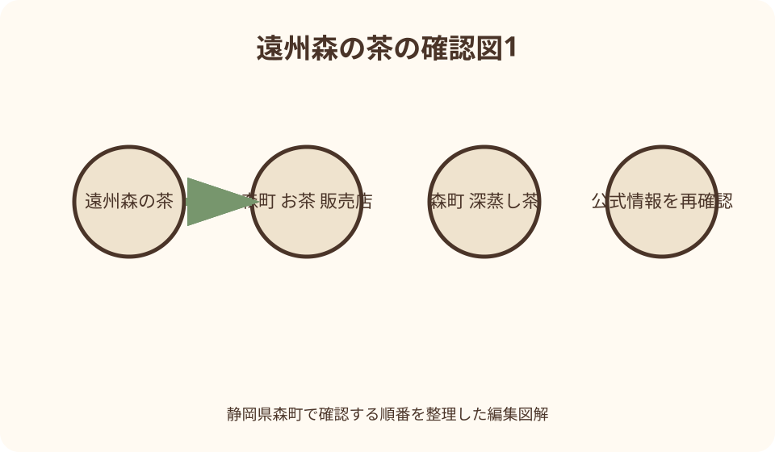
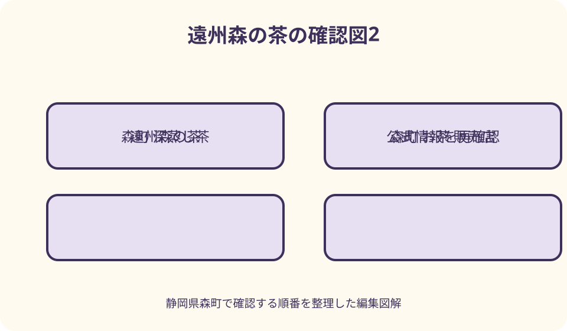

お茶・特産品｜最終確認 2026-08-10
静岡県森町で遠州森の茶を買う｜煎茶・深蒸し茶・ティーバッグの選び方
遠州森の茶は、最初に飲む人が急須を使うか、一日に何回飲むか、開封後にどこで保存するかを決めてから形を選びます。茶葉は店で淹れ方と急須の網を相談し、ティーバッグは一回量と湯量を包装で確認します。森町のお茶販売店は一店に絞り、営業と希望商品の在庫を当日に確認してください。売り切れなら別銘柄を無理に代用せず、同じ使用条件を満たす形へ切り替えるのが確実です。
最初に決める——茶の名前より、飲む場所と道具を確認する
遠州森の茶を買うときは、銘柄一覧から選び始めるより、飲む場所、急須の有無、一日に淹れる回数、開封後に飲み切る期間を先に決めます。自宅で急須を使う人、職場でマグカップだけを使う人、来客時に丁寧に淹れたい人では、同じ予算でも適する形が異なります。
森町観光協会は町内に複数の茶店と生産者を掲載しており、遠州森の茶は一つの包装や一銘柄だけを指す買い物名ではありません。店ごとに扱う商品や説明の得意分野が異なるため、地域名だけで蒸し方、品種、収穫時期まで同一だと決めつけないことが出発点です。
手土産なら相手が急須を持つかを確認し、分からなければティーバッグや少量包装を候補にします。自宅用の茶葉は普段の急須と一回の湯量を店員へ伝えます。健康への効能や体調変化を購入理由として断定せず、使いやすさ、表示、保存方法から比較します。
訪問日は第一候補の店を一つ、代案を一つだけ決めます。多数の茶店を短時間で回ると、説明や包装表示を比べる余裕がなくなります。営業時間、定休日、希望する形の取扱いは出発前または当日に運営者へ尋ね、過去の紹介記事を在庫表として使いません。
遠州森の茶を理解する——産地名と商品の表示を分けて読む
森町公式の「遠州の小京都」は、三方を山に囲まれた町の文化と、茶などの地域産業を紹介しています。この背景は買った茶を説明する手掛かりになりますが、町内で販売される全商品について、原料の産地、製茶方法、配合を一律に保証するものではありません。
包装では名称、原材料名、原料原産地、内容量、賞味期限、保存方法、販売者または製造者を順に読みます。「森町の店で購入した茶」と「包装に森町産と示された茶」は別の情報です。贈る相手へ産地を伝えるなら、推測ではなく表示と販売者の説明を根拠にします。
茶商組合の観光協会ページは、森町森の所在地と問い合わせ先、組合の公式サイトを案内しています。特定の商品を探すときは、組合名から全店共通商品があると考えず、どの店舗や生産者へ相談できるかを問い合わせる窓口として利用すると迷いが減ります。
茶の味や香りは、商品、淹れ方、水、保存状態で受け取り方が変わります。本記事では飲んでいない商品の甘さや渋みを断定せず、公式に確認できる形状と、購入者が確かめられる表示を中心に扱います。試飲できる場合も、提供条件と自宅の淹れ方が同じとは限りません。
煎茶と深蒸し茶を選ぶ——言葉の階層を混同しない
ことまち横丁の森の茶本舗は深蒸し茶を扱い、同店の茶の多くが深蒸しであると公式ページに記しています。また、詰め放題の案内には遠州産の深蒸し煎茶が掲載されています。この確認範囲を、森町の全茶店や全商品へ広げて説明してはいけません。
「煎茶」と「深蒸し」は単純な二者択一の銘柄名ではなく、売場では深蒸し煎茶という表示もあります。購入時は、名称だけで優劣を付けず、普段使う急須の網、淹れる量、後片付け、販売者が示す湯量や時間に合わせられるかを尋ねます。
細かな茶葉が出やすい商品では、粗い網の急須が合わない場合があります。店頭へ急須を持参する必要はありませんが、帯網、底網、注ぎ口の網など分かる範囲を伝えます。分からなければ急須の写真を見せ、茶こしやフィルターを追加すべきか店員に相談します。
初めて買う商品を大袋にすると、自宅の道具と合わなかったときに飲み切りにくくなります。まず小さな包装を選べるか、開封後の保存目安は何かを確認します。深蒸しという表示だけで色、味、飲みやすさを約束せず、試せる量から始めるのが安全です。

ティーバッグを選ぶ——一袋の重さではなく、一回の湯量を見る
森の茶本舗の公式案内には、通常のティーバッグに加え、かき混ぜる道具と一体になった形の商品が掲載されています。ティーバッグという共通名でも使い方は同じとは限らないため、一袋あたりの茶量、推奨する湯量、抽出時間、繰り返し使う想定の有無を包装で確認します。
職場用なら、給湯設備の温度を調整できるか、茶殻をどこへ捨てるか、マグカップの容量に合うかを見ます。旅先用なら個包装か、開封後にまとめて湿気を防げるかが重要です。便利そうという印象だけで大量に選ばず、使う場面を一回ずつ数えます。
贈答先に急須があるか分からない場合、ティーバッグは候補になります。ただし、ひも付きか、専用のかき混ぜ式か、水出しに対応するかなどは商品ごとの説明に従います。熱湯を注ぐ、長時間置くといった自己流を共通の正解にせず、同封の淹れ方も一緒に渡します。
茶葉とティーバッグを迷ったら、週末に急須で飲む分と平日に一杯ずつ飲む分を分けて買う方法があります。形を一つに統一する必要はありません。ただし両方を大容量にせず、開封時期をずらせる包装を選び、未開封品の期限と保存場所を確認します。
買う量を決める——人数ではなく、開封後の一回数を見積もる
購入量は「家族だから大袋」ではなく、一回に使う茶量と一週間の回数から見積もります。具体的な茶量は商品と淹れ方で異なるので、包装の推奨量を確認し、内容量を一回分で割ります。この計算なら、来客用だけの茶を日常用と同じ速度で消費すると誤認しません。
複数袋を買う場合は、すべてを同時に開けず、用途ごとに開封順を決めます。煎茶、深蒸し茶、ティーバッグを一斉に開けると比較はできますが、湿気やにおいの影響を受ける期間が長くなります。飲み切る予定日を袋へ記すと、次の購入量を調整できます。
茶の詰め放題は量の多さに目が向きやすい買い方です。公式案内には保存袋と工場で密封した商品も示されているため、詰める体験と保存性を分けて比べます。開催状況、対象商品、価格、包装の仕様は変わり得るので、当日の店頭説明を確認します。
贈答用は相手の人数だけでなく、開封後に密閉できるかを考えます。一世帯へ大きな一袋を贈るより、小分け包装の方が扱いやすいことがあります。箱の大きさや豪華さより、表示が読みやすく、相手が普段の道具で使い切れる量かを優先します。
保存を整える——冷蔵庫へ入れる前に、包装の指示を読む
茶は湿気、光、高温、強いにおいを避ける必要がありますが、すべてを冷蔵庫へ入れればよいとは限りません。未開封と開封後で扱いが違う商品もあるため、包装の保存方法と店員の説明を優先します。自己判断で容器を移し替える前に、密封性を確かめます。
冷蔵した袋をすぐ開けると、温度差で結露するおそれがあります。冷蔵保管を販売者が案内した商品は、開封前にどのように室温へ戻すかも尋ねます。出し入れを繰り返す日常用は、飲み切れる小分けにする方が管理しやすい場合があります。
乾物、香辛料、コーヒー、洗剤など強いにおいの近くを避け、光の当たらない場所を一つ確保します。購入前に収納場所を測れば、箱入り商品や複数袋を持ち帰ってから困りません。開封日を記録し、古い袋から使う順番を家族で共有します。
旅行中は、茶を冷蔵菓子や保冷剤へ直接触れさせず、濡れない袋へ分けます。夏の車内や直射日光の当たる座席へ置きません。長時間の移動や発送があるなら、販売者へ梱包と配送可否を相談し、購入量より到着後の状態を優先します。

淹れ方を持ち帰る——温度や時間を全商品共通にしない
茶を選ぶときは、商品と一緒に淹れ方の説明を持ち帰ります。茶葉量、湯量、湯温、待ち時間は商品によって案内が異なるため、本記事の固定値を正解にしません。店頭で普段のカップ容量を伝え、包装に説明がなければメモしてよいか尋ねます。
複数人分を淹れる場合、人数に比例して茶葉と湯を機械的に増やせばよいとは限りません。急須の容量や茶葉が開く余地も関係します。販売者に二人分、四人分の違いを尋ね、家庭の急須に収まらないなら二回に分ける方法を確認します。
最後の一滴まで注ぐという一般的な説明もありますが、急須の構造や商品説明を無視して動作だけをまねません。注ぐ回数、二煎目の条件、茶殻の捨て方まで聞けると、購入後に再現しやすくなります。細かい葉に合う網の手入れ方法も確かめます。
水出しや冷茶に使いたい場合は、対応を包装または販売者へ確認し、湯用の商品を自己判断で衛生管理の異なる長時間抽出へ回しません。フィルターインボトルなど専用器具を選ぶ場合も、容量、洗浄、冷蔵庫へ入る高さまで見てから購入します。
太田茶店で相談する——小國神社方面で、飲み方を言葉にする
森町観光協会は太田茶店を、茶を飲みながら選べる専門店として紹介し、小國神社近くの一宮に所在地を掲載しています。試せる内容や提供状況は当日変わり得るため、試飲を前提にせず、買いたい形と訪問時刻を電話で確認してから向かいます。
観光協会ページで確認した営業時間は九時から十六時、定休日は火曜日ですが、これは二〇二六年八月十日時点の掲載情報です。臨時休業、繁忙日、商品在庫を保証しないので、遠方から一店を目的に行く場合は、店舗の最新案内または電話で再確認します。
相談時は「おすすめ」だけでなく、急須の種類、普段の湯量、一週間の回数、贈答か自宅用かを伝えます。深蒸しを探しているなら取扱いと急須との相性、ティーバッグなら一袋の使い方を質問し、店員が示した商品固有の説明を包装と照合します。
小國神社参拝と組み合わせる日は、茶を買ってから長時間車内へ置かない順番にします。参拝後に寄る、発送を頼む、常温でも日光を避ける収納を用意するなど、買った後まで計画します。店舗の駐車方法は現地表示に従い、路上で待ちません。
茶商組合と町内茶店を使う——一覧から一店へ絞る
森町観光協会の特産品ページには、町内の茶店、生産者、茶商組合が複数掲載されています。一覧は全店を巡るためではなく、自分の出発地、営業確認のしやすさ、欲しい形を相談できる店を探すために使います。掲載が現在の在庫を意味するわけではありません。
茶商組合へ問い合わせる場合は、特定銘柄の順位ではなく、「森町内でティーバッグを探す」「急須について相談したい」「贈答の発送を確認したい」のように条件を伝えます。組合が小売在庫を一括管理していると決めつけず、案内された各事業者へ改めて確認します。
町内店を訪ねる前に、現金以外の決済、駐車場所、包装、発送、のし、試飲の有無を必要なものだけ質問します。すべてのサービスを当然と考えません。少量を一袋買う場合も、説明を受ける時間を確保し、閉店間際の駆け込みを避けます。
複数店の商品を比べるなら、価格だけでなく内容量、原料表示、包装、推奨する淹れ方を同じ欄に記録します。価格は二〇二六年八月十日以後に変わるため本文で固定しません。同じ重量でも茶の形や包装目的が違えば、単純な単価順は選択の答えになりません。
森の茶本舗で買う——ことまち横丁の品揃えを目的別に見る
ことまち横丁の森の茶本舗は、深蒸し茶、ティーバッグ、茶器、フィルターインボトル向け商品などを公式に紹介しています。一か所で形を比較しやすい一方、掲載品が訪問日にすべて揃うとは限らないため、目当ての商品は在庫と販売場所を確認します。
公式ページに掲載された営業時間は九時から十七時三十分ですが、二〇二六年八月十日時点の確認です。横丁全体の営業と個別売場の取扱いを同一視せず、臨時変更、催事、詰め放題の実施は公式の最新案内か当日の店頭で確かめます。
小國神社と組み合わせるなら、参拝前に売場で候補だけ確認し、帰路に購入する方法があります。ただし売り切れの可能性を受け入れられない贈答品は、取り置き可否を事前に尋ねます。参拝の時間を削ってすべての商品を比較する計画にはしません。
詰め放題、密封品、ティーバッグを比べるときは、体験性、保存、配りやすさを別々に採点します。量が多いことを品質や使いやすさと同義にせず、開封後の容器と飲み切る回数を計算します。価格と対象茶は店頭の最新表示を確認します。
フジヤ・茶文化資料に寄る——歴史を見る場所と購入場所を分ける
森町観光協会はフジヤ・茶文化資料を、旧藤江勝太郎家を活用し、森町の茶業史に触れられる場所として掲載しています。茶の産地背景を理解する立ち寄り先になりますが、希望する茶葉を常時小売する店だと本文から推測しません。
訪問する場合は、開館日、見学方法、展示内容、茶商品の販売有無を運営者へ確認します。歴史的な建物を見た後に茶を買いたいなら、近隣の茶店や茶商組合の案内を別に用意し、一か所ですべて済む予定にしない方が安全です。
資料から得た地域史は、贈答時の説明を豊かにしますが、個別商品の品質証明には使えません。商品について伝える内容は包装表示と販売者の説明、地域史について伝える内容は施設や公的資料というように、根拠を分けてメモします。
見学と買い物を同日にするなら、資料施設の滞在時間と茶店の閉店時刻を先に比較します。展示を急いで切り上げるより、買い物を別日にする、茶を先に確保する、公式通販を確認するという組替えも候補です。
車なしで買う——遠州森駅と森の市を基点にする
JA遠州中央の森の市は、公式案内で天竜浜名湖鉄道の遠州森駅から西へ約二百メートルとされています。茶も取扱品として掲載されているため、車なしの人が駅周辺で確認できる候補です。ただし駅構内で同じ品が買えるとは考えません。
列車で訪ねる日は、森の市の営業、茶の入荷、希望する包装を先に問い合わせ、往復の時刻表を控えます。駅に近くても、商品選び、説明、会計には時間がかかります。帰りの列車直前ではなく、一本余裕を持てる時間帯へ組み込みます。
徒歩で持ち帰る量は、重量だけでなく箱の幅と雨対策を考えます。茶葉は軽くても複数箱はかさばり、紙袋は雨に弱い場合があります。リュック内で水筒や濡れた傘と分け、贈答箱が変形しない底板や袋を準備します。
小國神社方面の茶店やことまち横丁を公共交通で組み合わせる場合、乗継、最終便、徒歩区間を公式交通情報で確認します。時間が合わなければ駅周辺の一か所に絞り、後日正規の通販や発送を使います。無理な徒歩移動で営業時間に間に合わせません。
贈答に整える——相手の道具、表示、渡す日を一組にする
贈答用の遠州森の茶は、相手が急須を持つか、職場で飲むか、何人で分けるかを確認します。分からない相手へは一種類の大袋より、小分けやティーバッグが扱いやすい場合があります。包装の見栄えだけでなく、開封後に使える形を選びます。
のし、手提げ袋、発送、到着日の指定は店舗ごとに可否が異なります。注文時に用途、名入れ、数量、希望到着日、送料を確認し、受注後に変更できると期待しません。価格は包装代を含む総額で店頭または注文画面から確かめます。
茶そのものと茶菓子を組み合わせる場合は、菓子の原材料、アレルゲン、保存温度、期限を別に読みます。茶に含まれない原材料でも詰合せには含まれる可能性があります。相手の食事制限が不明なら、茶単品または本人が選べる案内にします。
渡すときは、遠州森の茶という地域名に加え、包装に記された商品名と淹れ方を伝えます。効能や味を誇張せず、「この湯量で案内されている」「ティーバッグなので職場でも使える」のように、相手が実行できる情報を添えます。
売り切れ・休業時に切り替える——同じ銘柄ではなく、同じ用途を守る
第一候補の茶が売り切れたら、似た名前を急いで選ぶのではなく、急須用、ティーバッグ、贈答、小分けという必要条件を店員へ伝えます。同じ用途を満たす商品がなければ、その店で無理に買わず、次の正規販売先へ切り替えます。
店舗が休業なら、観光協会の茶店一覧、茶商組合、森の市、森の茶本舗の順に、自分の移動動線へ合う候補を一つ確認します。電話がつながらない店を何軒も回らず、公式サイトの営業案内と現在地からの所要時間を比べます。
車なしで時間切れになった場合は、帰りの列車を優先します。森町公式のふるさと納税には茶を含む返礼品が掲載される場合がありますが、これは寄附制度であり通常の通販とは目的と手続が異なります。偽サイトへの注意喚起を読み、買い物の代用と混同しません。
後日購入するなら、店または生産者の公式通販、電話注文、正規に案内された販売先を使います。検索広告だけで運営主体を判断せず、所在地、連絡先、特定商取引の表示を確認します。ふるさと納税は森町公式ページから正規サイトへ進みます。
良い点——作り手へ使い方を相談してから選べる
静岡県森町で茶を買う良い点は、商品名だけでなく、急須、湯量、飲む回数、贈答の事情を茶店へ相談できることです。町内には観光協会が案内する複数の茶店や生産者があり、自分の使い方に合う窓口を選べます。
森の茶本舗では深蒸し茶、ティーバッグ、茶器など異なる形が公式に示され、太田茶店では茶を選ぶ相談ができる店として紹介されています。形を実物で比べられることは、オンラインの商品名だけでは分かりにくい使い勝手を確認する助けになります。
茶文化資料や「遠州の小京都」の案内を合わせると、茶を単なる消耗品ではなく、森町の地形、産業、町並みと結び付けて理解できます。ただし地域の物語と個別商品の表示を分ければ、誇張せずに贈り先へ背景を説明できます。
購入後の淹れ方まで質問すれば、自宅で再現できない買い物を減らせます。高価か安価かだけでなく、使い切れる量、保管できる包装、手持ちの道具との相性を選べることが、産地で対面購入する実務上の価値です。
注文したい点——最新の営業・在庫・表示を販売者に確認する
注文したい点の第一は、希望する商品形状を具体的に伝えることです。「遠州森の茶がありますか」だけではなく、茶葉かティーバッグか、急須の網、贈答数、受取日、発送希望を伝えると、取扱いの有無を回答してもらいやすくなります。
第二は、営業時間と定休日を訪問日当日に確認することです。本記事が参照した時刻や休業日は二〇二六年八月十日時点の公式掲載であり、臨時変更や催事を含みません。詰め放題、試飲、見学も常時実施と決めつけず、個別に尋ねます。
第三は、包装表示と説明書を残すことです。内容量、期限、保存、淹れ方、原料原産地を写真またはメモに残し、贈答なら相手にも渡します。価格だけを記録して商品名を忘れると、次回に同じ条件で注文しにくくなります。
第四は、発送やのしの締切を確認することです。大量注文は当日持ち帰れるとは限らず、包装にも時間がかかります。必要日から逆算し、在庫確保、名入れ、支払い、送料、到着予定の順で確認し、口頭だけでなく注文内容を控えます。
対案・結論——一店・一用途・一つの代案で買い切る
結論として、初回は販売店を一店に絞り、自宅の急須用、職場のティーバッグ、贈答という用途も一つに絞ります。店員へ道具と一回量を伝え、小さな包装で試し、淹れ方の説明を持ち帰れば、銘柄を多数集めるより失敗を減らせます。
小國神社方面なら太田茶店または森の茶本舗、町なかで車なしなら遠州森駅近くの森の市を候補にし、営業と在庫を確認します。フジヤ・茶文化資料は歴史を学ぶ目的とし、茶の購入可否は別に問い合わせます。
深蒸し茶を探す場合も、森町の茶すべてが深蒸しだとは説明せず、商品の表示を見ます。ティーバッグなら湯量と一回量、茶葉なら急須の網と保存、贈答なら相手の道具と期限を確認することで、形ごとの判断ができます。
第一候補がなければ、同じ用途を満たす別商品を販売者へ尋ねます。なければ町内の正規窓口または後日の公式通販へ替え、移動時間や列車を犠牲にしません。ふるさと納税は寄附として別に判断し、通常購入と混ぜません。
大石の視点——産地で買うとは、説明を再現できる形で持ち帰ること
私が森町で茶を選ぶなら、最初に家の急須を確認し、一回に使うカップの容量をメモします。現地で有名な商品を尋ねる前に、その道具で無理なく淹れられる商品を相談します。買った後の毎日まで想像できる方が、産地訪問を生活へつなげられます。
産地名は魅力的ですが、それだけで味、蒸し方、原料を語りません。包装に書かれた事実、店員に確認した淹れ方、森町公式や観光協会が示す地域背景を三つに分けて受け取ります。分からない点を空白のまま残す方が、もっともらしい物語を足すより誠実です。
贈り物でも、箱の格より相手が一杯を淹れられることを大切にします。急須がなければティーバッグ、保管場所が小さければ小分け、飲む頻度が分からなければ少量を選びます。相手の暮らしに合わせることが、森町の茶を最後まで大切に扱うことにつながります。
遠州森の茶を買う日の成功は、袋数では測りません。一店で説明を聞き、一つの用途に合う量を選び、保存と淹れ方を記録して帰る。それができれば、次回は同じ商品を再注文するにも、別の茶へ広げるにも、自分の基準を持って判断できます。
公式情報・確認先
掲載内容は次の一次情報を基礎に整理しました。営業、料金、催し、交通は変わるため、出発前または手続き前にリンク先で最新情報を確認してください。
- 遠州の小京都（静岡県森町、2026-08-10確認）
- 観光情報（静岡県森町、2026-08-10確認）
- 森町ふるさと納税（静岡県森町、2026-08-10確認）
- 森町茶商組合（森町観光協会、2026-08-10確認）
- 太田茶店（森町観光協会、2026-08-10確認）
- 森町の特産品・お土産（森町観光協会、2026-08-10確認）
- フジヤ・茶文化資料（森町観光協会、2026-08-10確認）
- 森の茶本舗（ことまち横丁、2026-08-10確認）
- お茶の詰め放題（ことまち横丁、2026-08-10確認）
- ファーマーズマーケット森の市（JA遠州中央、2026-08-10確認）